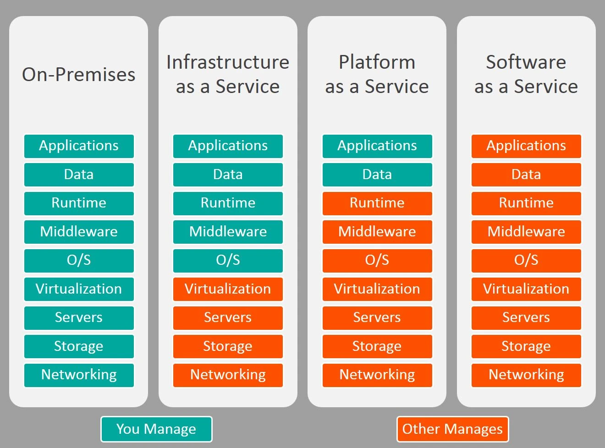
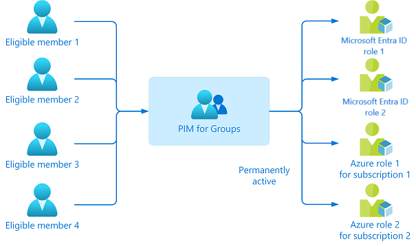

🌩️ Cloud-Grundlagen (Azure/M365)
i
RBAC (Role-Based Access Control) heisst einfach: statt jedem
Menschen individuell Rechte zu geben, bekommt er eine "Rolle"
(z.B. Helpdesk), die genau die Rechte mitbringt, die diese Rolle
braucht - nicht mehr, nicht weniger.
i
Rollenmodell (RBAC) nach dem Prinzip der minimalen Rechte und die Grundlagen der M365-Lizenzierung.
Cloud-Servicemodelle: On-Premises, IaaS, PaaS, SaaS
i
Wie beim Pizzabestellen: On-Premises ist selbst backen (alles
selbst besorgen und tun), IaaS ist Teig kaufen und selbst belegen
und backen, PaaS ist eine Fertigpizza selbst nur noch aufbacken,
SaaS ist die Pizza liefern lassen - fertig zum Essen, um nichts
musst du dich mehr kümmern.
i
Je nach Servicemodell verschiebt sich die Verantwortung zwischen dir (Kunde) und dem Cloud-Anbieter - das ist das sogenannte Shared-Responsibility-Modell:

Wichtige Ausnahme, die oft übersehen wird: Zugriffskontrolle und Datenklassifizierung bleiben auch bei SaaS in der Verantwortung des Kunden - Microsoft sichert z.B. bei M365 die Plattform ab, aber nicht, wer worauf Zugriff hat oder ob Daten korrekt eingestuft sind.
Azure-Ressourcenhierarchie
i
Wie eine Firma mit Konzern, Tochterfirmen und Abteilungen: der
Tenant ist der Gesamtkonzern, Management Groups bündeln
Tochterfirmen mit ähnlichen Regeln, Abonnements sind die
einzelnen Tochterfirmen (mit eigener Abrechnung), Ressourcengruppen
sind die Abteilungen darin.
i
Berechtigungen und Richtlinien (z.B. per RBAC oder Azure Policy) lassen sich auf jeder dieser Ebenen zuweisen und werden nach unten vererbt:
Eine Berechtigung, die z.B. auf Ebene der Management Group vergeben wird, gilt automatisch für alle darunterliegenden Abonnements, Ressourcengruppen und Ressourcen - praktisch für konzernweite Richtlinien, aber riskant bei einer versehentlich zu weit oben vergebenen Berechtigung.
Rollenmodell (RBAC) & Least Privilege
Statt jedem Admin die volle Global Administrator-Rolle zu geben, gibt es dutzende eingeschränkte Admin-Rollen für einzelne Aufgabenbereiche - z.B. Helpdesk Administrator, User Administrator, License Administrator, Exchange Administrator.
Least Privilege: jede Person bekommt nur genau die Rechte, die sie für ihre Aufgabe wirklich braucht - nicht mehr. Das begrenzt den möglichen Schaden bei einem kompromittierten Konto oder einem Bedienfehler.
Privileged Identity Management (PIM)
i
Wie ein Schlüsseltresor beim Empfang: statt jedem Mitarbeiter
dauerhaft einen eigenen Schlüssel zum Serverraum zu geben, muss
er sich den Schlüssel bei Bedarf kurz aus dem Tresor holen - und
gibt ihn danach wieder zurück.
i
Statt hochprivilegierte Rollen dauerhaft zuzuweisen, aktiviert PIM sie nur bei Bedarf, zeitlich begrenzt (Just-in-Time) - oft zusätzlich mit Genehmigung und MFA-Pflicht. Ein dauerhaft aktives Admin-Konto ist ein bevorzugtes Angriffsziel; mit PIM existiert die erhöhte Berechtigung nur so lange, wie sie tatsächlich gebraucht wird.
PIM for Groups
i
Statt für jede einzelne Person jede einzelne Rolle separat per
PIM zu verwalten, wird EINE Gruppe für alle betroffenen Rollen
eingerichtet - neue Teammitglieder werden einfach nur noch zu
dieser einen Gruppe hinzugefügt und erhalten dadurch automatisch
Zugriff auf das gesamte Rollenpaket.
i
Statt PIM für jede Rolle einzeln pro Person einzurichten, lässt sich eine ganze Gruppe für PIM konfigurieren: Mitglieder sind für die Gruppe "eligible" (berechtigt, aber nicht automatisch aktiv) und aktivieren bei Bedarf ihre Mitgliedschaft zeitlich begrenzt - die Gruppe selbst kann dabei mit mehreren Rollen gleichzeitig verknüpft sein (z.B. eine Entra-ID-Rolle UND eine Azure-Rolle für mehrere Abonnements).

Vorteil in der Praxis: kommt ein neues Teammitglied dazu, das genau dieses Rollenpaket braucht, reicht die Aufnahme in EINE Gruppe - ohne PIM for Groups müsste jede der Rollen einzeln pro Person eingerichtet werden.
M365-Lizenzierung
- Lizenzen werden pro Nutzer vergeben (nicht pro Gerät).
- Ein Paket wie M365 E3 bündelt mehrere Service Plans (Exchange, Teams, SharePoint, ...) - einzelne Service Plans lassen sich bei Bedarf deaktivieren.
- Gruppenbasierte Lizenzierung: Lizenzen werden automatisch über Mitgliedschaft in einer Sicherheitsgruppe zugewiesen/entzogen - praktisch bei grossen, sich verändernden Teams.